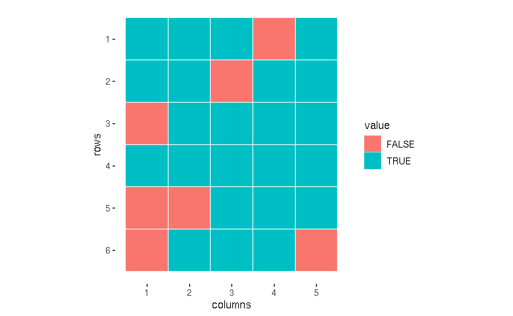

Use case: Iterative Policy Evaluation (Reinforcement Learning)
policy_evaluation.RmdIn this vignette, we’ll present a real-life use case, which shows how the matricks package makes the work with matrices easier.
Let’s try to implement an algorithm from the field of Reinforcement Learning called iterative policy evaluation. The environment we will work on is a simple Grid World game. This vignette was inspired by a Reinforcement Learning course by Lazy Programmer, originally written in Python.
Initializing environment
We initialize environment, using following functions from matrix package: * m() * matrix_idx() * plot.matrix() * seq_matrix() * sv() * with_same_dims()
We construct matrices, describing game environment: * actions - all the possible moves * rewards
# Defining possible actions
# FALSE = unavailable field
actions <- m(T, T, T, F, T|
T, T, F, T, T|
F, T, T, T, T|
T, T, T, T, T|
F, F, T, T, T|
F, T, T, T, F)
plot(actions)
# Defining rewards matrix with two terminal states
rewards <- with_same_dims(actions, 0)
rewards <- sv(rewards,
c(4, 4) ~ 1., # Win
c(5, 3) ~ -1) # Lose
# We add small penalties, which encourages models
# to reduce number of steps it passes
rewards[rewards == 0] <- -0.1
plot(rewards)
Setting fixed policy
Policy defines a set of moves we should perform, in order to achieve the best result in the game. We start with a fixed policy values.
# Symbols for moves
U <- "U" # Up
D <- "D" # Down
L <- "L" # Left
R <- "R" # Right
fixed.policy <- m(R , D , L , NA, D |
R , D , NA, D , L |
NA, R , D , D , D |
R , R , D , NA, D |
NA, NA, NA, U , L |
NA, R , U , L , NA)It was easier to define policy using character symbols (as above). However, we have to transform into form that is more convenient for computations.
as_idx <- function(x){
n.row <- nrow(x)
n.col <- ncol(x)
result <- matrix(list(), nrow = n.row, ncol = n.col)
for (i in 1:n.row){
for (j in 1:n.col){
coords <- c(i, j)
if (is.na(at(x, coords)))
next
x.val <- x[i, j]
switch (x.val,
U = c(i - 1, j),
D = c(i + 1, j),
L = c(i, j - 1),
R = c(i, j + 1),
) -> move.idx
if (!is_idx_possible(x, move.idx))
next
result[i, j] <- list(move.idx)
}
}
result
}
fixed.policy.idx <- as_idx(fixed.policy)
fixed.policy.idx
#> [,1] [,2] [,3] [,4] [,5]
#> [1,] Numeric,2 Numeric,2 Numeric,2 NULL Numeric,2
#> [2,] Numeric,2 Numeric,2 NULL Numeric,2 Numeric,2
#> [3,] NULL Numeric,2 Numeric,2 Numeric,2 Numeric,2
#> [4,] Numeric,2 Numeric,2 Numeric,2 NULL Numeric,2
#> [5,] NULL NULL NULL Numeric,2 Numeric,2
#> [6,] NULL Numeric,2 Numeric,2 Numeric,2 NULLPolicy evaluation function
evaluate_policy <- function(actions, rewards, policy,
epsilon = 1e-3, gamma = 0.9){
V <- with_same_dims(policy, 0)
policy.idx <- as_idx(policy)
while (TRUE) {
biggest.change <- 0
for (move in seq_matrix(policy.idx)) {
s <- move[[1]] # Action, value at index s
a <- move[[2]]
old.v <- at(V, s)
if(!at(actions, s))
next
if(is.null(a))
next
r <- at(rewards, a)
at(V, s) <- r + gamma * at(V, a)
biggest.change <- max(biggest.change, abs(old.v - at(V, s)))
}
print(biggest.change)
if (biggest.change < epsilon){
break
}
}
return(V)
} Experiment
V1 <- evaluate_policy(actions = actions,
rewards = rewards,
policy = fixed.policy)
#> [1] 1
#> [1] 0.9
#> [1] 0.81
#> [1] 0.729
#> [1] 0.6561
#> [1] 0.59049
#> [1] 0
V1
#> [,1] [,2] [,3] [,4] [,5]
#> [1,] -1 -1 -1 0.0 0.458
#> [2,] -1 -1 0 0.8 0.620
#> [3,] 0 -1 -1 1.0 0.458
#> [4,] -1 -1 -1 0.0 0.620
#> [5,] 0 0 0 1.0 0.800
#> [6,] 0 -1 -1 -1.0 0.000
plot(V1)